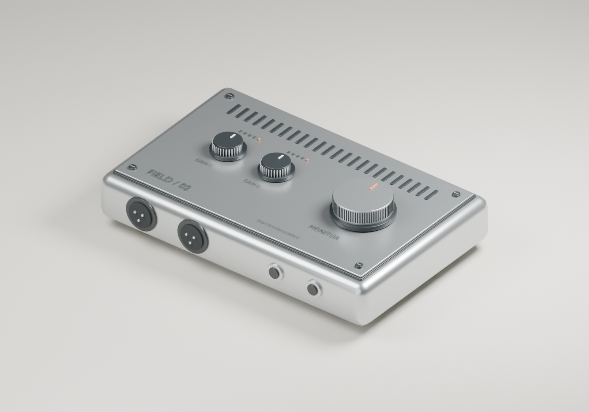
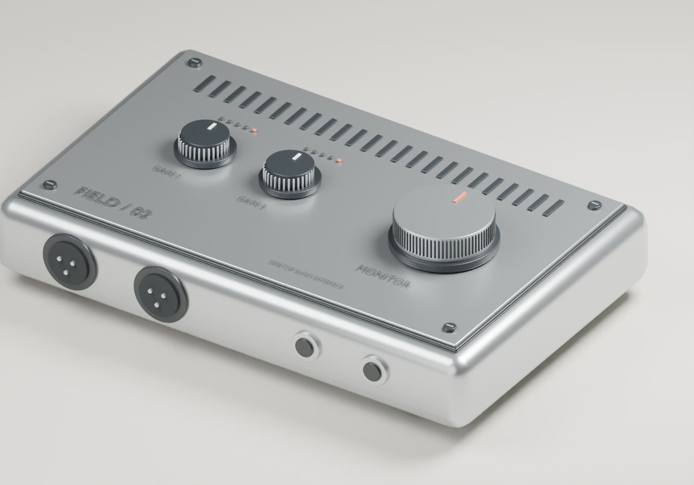

Blender · предметная визуализация
FIELD / 02
Концепт настольного аудиоинтерфейса: алюминиевый корпус, рифлёные регуляторы, разъёмы и студийный свет.

Новая персональная работа, октябрь 2026. Рендер реальной Blender-сцены; процедурное моделирование с помощью Python и ИИ-инструментов.
Замысел
Сдержанный студийный инструмент: читаемая панель управления, тактильные регуляторы и конструкция, которую хочется рассмотреть вблизи. Внимание к фаскам, стыкам, разъёмам, вентиляции и печатной маркировке.
Работа со сценой
Геометрия собрана из отдельных редактируемых объектов: 224 меш-объектов. Использованы фаски, сглаживание, PBR-материалы и несколько источников света. Рендер — Cycles; два ракурса показывают общую композицию и детали.

Детальный ракурс той же сцены. Изображение не заменяет 3D-модель — исходник доступен ниже.
Исходники
Можно открыть сцену, изменить материалы и освещение или пересобрать обе работы из Python-скрипта. Модели и текстуры из чужих портфолио не использованы. Это визуальный концепт, без заявления о производственной или строительной документации.

Blender 4.5 LTS. В файле сохранены материалы, свет, камера и модификаторы. Эти сцены — новые работы, созданные для обновления портфолио; они не выдаются за утраченные старые проекты.